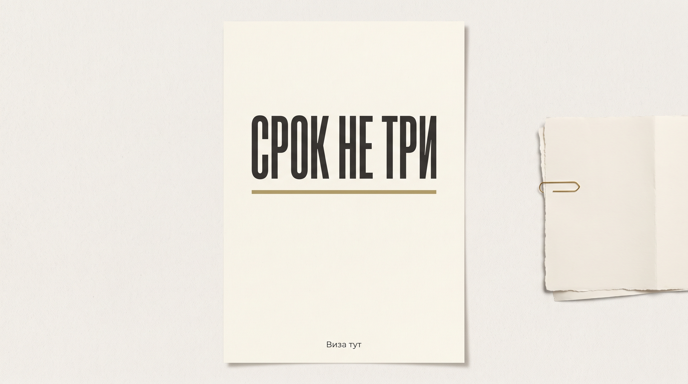

Блог · Справка · 19 октября 2026
Как получить справку о несудимости и сколько она действует

Справку о наличии или отсутствии судимости выдаёт МВД. Регламент не пишет, сколько она годна. Три месяца в нём: столько хранят невостребованную бумагу с даты регистрации заявления. Это не срок годности. До заказа выпишите дату, к которой бумага должна быть на руках, формат «бумага или файл» и апостиль: да, нет или спросить.
Ольга записана на подачу через три недели. Подруга пишет, что справка живёт три месяца, файл с Госуслуг можно распечатать дома, а апостиль ставят сами. Ольга не знает, успеет ли бумага, и боится, что в день подачи её развернут с листом из принтера.
Если честно, этот совет тянет не туда.
Человек первый раз заказывает справку к поездке и путает, сколько её делают, с тем, сколько она живёт. Распечатка из личного кабинета подачу не закрывает. Я бы сначала записал три пометки и не выдумывал дату «годна до».
Записать дату, к которой бумага нужна
Новичок называет не срок из блога, а день, когда бумагу будут смотреть. В регламенте МВД три разных часа, и люди их склеивают в один: сколько делают, сколько хранят невостребованный лист, сколько занимает апостиль.
На листе нужна дата подачи.
Ольга впервые несёт эту бумагу к подаче и боится опоздать или принести не тот вид. Если стране и цели справка не нужна, лишнюю не кладите. Чужие списки «на всякий случай» не подходят.
Проверьте правило того, кто бумагу примет, до заказа. Виза: это разрешение страны въезда. Справка его не ставит и слабый комплект не лечит. Визу заранее этой бумагой не обещаем.
Выбрать бумагу или файл до заказа
Заявление подают через Госуслуги. Файл подписывают усиленной квалифицированной электронной подписью и направляют в личный кабинет или в МФЦ. Пока файл передают электронно, он равнозначен бумаге. Так пишет новость площадки Госуслуг.
Домашний лист не оригинал.
Распечатанная электронная справка юридической силы не имеет. mos.ru говорит то же: бумага и файл равнозначны, пока файл не распечатан дома.
Бумагу выдают лично в ГИАЦ или информационном центре. В МФЦ её выдают как подтверждение электронного документа. Для апостиля и для места, где просят оригинал, возьмите бумагу. В «Виза тут» готовят бумажный экземпляр через Госуслуги.
Приём ГИАЦ с 27 декабря 2022: Москва, Новослободская, 57/65. Офис сервиса: Большая Полянка 42, строение 1, офис 426, по будням с 10:00 до 18:00. Адреса не смешивайте.
Подать заявление на Госуслугах
Нужна подтверждённая учётная запись. С 14 лет заявление можно подать самому. От заявителя: заявление и копия заполненных страниц документа, который удостоверяет личность проверяемого. Тексты на русском или с переводом. Шаги смотрите в карточке услуги.
Представителю добавляйте доверенность. Родителю, усыновителю, опекуну или попечителю: бумагу о праве.
Отказать могут, если сведения не сходятся с документами, комплект неполный или на выдаче не показали оригиналы. За саму справку пошлина не предусмотрена. Лишняя плата: повод для жалобы. Сумму не пишем.
Не ставить день ведомства в поездку
Потолок изготовления: не больше 30 календарных дней с даты регистрации заявления в ГИАЦ или информационном центре. Если нужны дополнительные сведения, срок продлевают не больше чем на 30 календарных дней и уведомляют заявителя. Посчитайте, успевает ли этот потолок к дате Ольги.
В календарь поездки этот день не ставьте.
Результат направляют в течение 3 рабочих дней со дня подписания. Это тоже срок ведомства. Вычеркните фразу «бумага будет точно к среде».
На странице справки обычный и срочный тариф: срок нашей работы. Какой подходит, выберите до оплаты, когда дата подачи уже ясна. Срочность не значит, что ведомство уже выпустило бумагу, и не делает старую справку новой. Срок ведомства в договор не записываем.
Спросить свежесть у того, кто примет бумагу
Срока годности регламент не задаёт. Пункт про хранение говорит другое: бумагу, которую не забрали, держат 3 месяца с даты регистрации заявления. Чужие тексты расходятся: бессрочно, три месяца, три года. Одну цифру из этого спора не выбирайте. Чужая цифра мешает назвать свою дату.
Свежесть спрашивают у того, кто бумагу примет, и считают от даты, когда её будут смотреть. Если поездка сдвинулась, сверьте старую справку с новой датой подачи. Просроченную к этой подаче не прикладывают.
| Где заказывают | Что оказывается на руках | Что спросить про срок годности |
|---|---|---|
| Госуслуги | Файл с подписью МВД в кабинете | Примут ли файл электронно. Домашний лист не оригинал |
| МФЦ | Бумагу как подтверждение файла. Апостиль не ставят | Нужна ли бумага к подаче. 3 месяца здесь про хранение, не про свежесть |
| ГИАЦ или информационный центр | Бумагу на приёме. Апостиль, если он нужен | К какой дате нужен оригинал и просит ли адресат апостиль |
| Страница справки | Помощь с бумагой через Госуслуги | Дата, формат, апостиль. Срок ведомства не обещаем. Цену смотрите в «Стоимость» |
Решить апостиль до заказа
Апостиль на справку органов внутренних дел ставит МВД. ГИАЦ ставит его на документы ГИАЦ и информационных центров, информационный центр на свои. Минюст на саму справку МВД не назначен. В МФЦ услугу не оказывают. Для задачи внутри России штамп не автоматический.
Ставьте его, только если бумагу смотрят за границей и адресат просит. Например, Ольге до заказа нужно спросить у места подачи, а не верить, что апостиль «ставят сами».
На странице апостиля ГИАЦ срок услуги не больше 5 рабочих дней. Продление не больше чем на 30 рабочих дней, если нужно сверять подпись или печать. Для штампа нужна бумага. Пошлину за апостиль цифрой не пишем.
Открыть цену в блоке «Стоимость»
Цену работы сервиса легко спутать с пошлиной. За выдачу справки пошлины в регламенте нет. Пошлина за апостиль отдельная, сумму не пишем. Откройте блок «Стоимость» и выберите тариф до оплаты. Держите пошлину отдельно от цены услуги.
Готовьте бумагу к дате подачи. Оригинал забирают в офисе или курьером. Анкету принимаем и из другого города.
Вы сможете отметить три пометки на листе. Визу этой бумагой не начинайте.
- Выпишите дату, к которой бумага нужна.
- Проверьте, нужна ли она стране и цели.
- Выберите файл или бумагу. Домашний лист не берите.
- Подайте заявление на Госуслугах. Представителю добавьте доверенность.
- Держите 30 календарных дней с регистрации как потолок ведомства, не как день выдачи.
- Спросите свежесть у того, кто примет бумагу.
- Решите апостиль. Откройте блок «Стоимость».
Оставьте заявку: имя, телефон, страна. Анкету принимаем и из другого города. Оригиналы в офисе или курьером, подача в Москве.
Телефон +7 (495) 662-98-99. Адрес и часы: контакты. Дальше: как мы работаем, услуги без цен, блог.
Если дата подачи уже есть, заявка та же. Решения ведомства и консульства остаются не за нами.
Частые вопросы
Как получить справку о несудимости?
Заявление на Госуслугах: подтверждённая учётная запись, заявление и копии страниц паспорта. Файл уходит в кабинет. Бумагу забирают в информационном центре или в МФЦ.
Сколько действует справка об отсутствии судимости?
Единого срока годности регламент не задаёт. Три месяца в нём: хранение невостребованной бумаги, не срок годности. Свежесть спрашивайте у того, кто примет бумагу.
Можно ли распечатать файл из Госуслуг и нести его на подачу?
Нет. Распечатка юридической силы не имеет. Файл жив, пока его передают электронно. Для оригинала и апостиля нужна бумага.
Сколько ждать справку о несудимости через Госуслуги?
Потолок ведомства: не больше 30 календарных дней с регистрации и ещё до 30, если нужны сведения. Это не дата сервиса. Срок нашей работы смотрите в блоке «Стоимость».
Где поставить апостиль на справку о несудимости?
Ставит МВД: ГИАЦ или информационный центр. В МФЦ услугу не оказывают. Минюст на саму справку МВД не назначен. Нужен ли штамп, решите до заказа.
Где смотреть цену услуги и есть ли пошлина за справку?
Цену смотрите в блоке «Стоимость» на странице справки. За саму справку пошлина регламентом не предусмотрена. Пошлину за апостиль цифрой не пишем.
Справка о несудимости заменяет визу?
Нет. Это бумага к подаче, не разрешение на въезд. Визу она не ставит. Если стране справка не нужна, лишнюю не кладите.